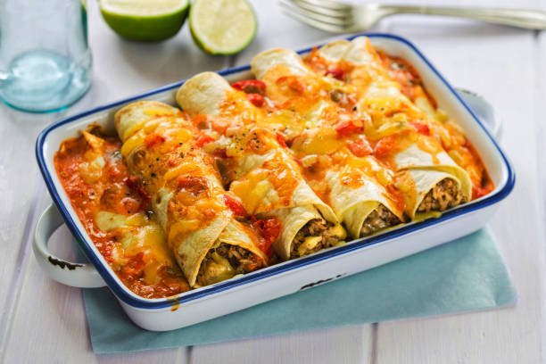
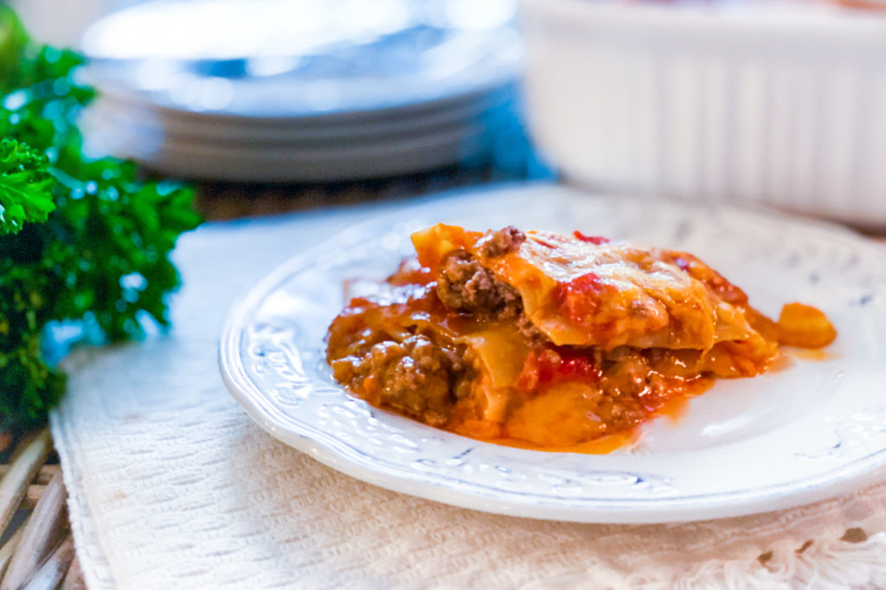
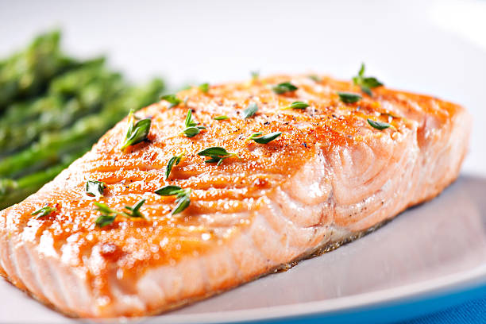

Odin Recipes

Beef Enchiladas
With just one pound of ground beef and 20 minutes of prep time, you can have a pleases-all-customers dinner for five on the table in less than an hour with this easy enchilada recipe. Transform five simple ingredients into this cheesy, hearty meal, with a little help from Odin.
Ingredients
- 1 lb lean (at least 80%) ground beef
- 2 cans (10 oz each) Old El Paso™ red enchilada sauce
- 1 can (4.5 oz) Old El Paso™ chopped green chiles
- 1 package (8.2 oz) Old El Paso™ flour tortillas for soft tacos & fajitas (6 inch)
- 1 1/2 cups shredded Cheddar cheese (6 oz)
Steps
- Heat oven to 375°F. Spray 13x9-inch (3-quart) baking dish or pan with cooking spray.
- In 10-inch nonstick skillet, cook beef over medium-high heat 5 to 7 minutes, stirring occasionally, until thoroughly cooked; drain. Stir in 1/2 cup of the enchilada sauce and the chiles.
-
Spread 1/2 cup of the enchilada sauce evenly in baking dish. Spread 1/4 cup beef mixture down center of each tortilla; sprinkle with 1 tablespoon cheese. Wrap tortillas tightly around filling, placing seam side down in baking dish. Top with remaining enchilada sauce. Sprinkle with remaining cheese.
- Bake 20 to 25 minutes or until hot and bubbly. Let stand 5 minutes before serving.

Lasagna
This will be the easiest lasagna you have ever made- guaranteed! Our 5 Ingredient Lasagna is so simple to make and is delicious! We mix it up by using cheddar cheese and we keep the sauce light! The result is phenomenal and when my family requests a lasagna, I’m totally on board to make it!
Ingredients
- 12 oz Lasagna Noodles
- 1/2 Stick butter
- 1.5 lb ground beef
- 1 qt spaghetti sauce
- 8 oz Cheddar Cheese
Steps
- Preheat oven to 350 F.
- Brown ground beef, drain, and set aside.
- Layer lasagna dish with 1/4th of pasta sauce, 1/3rd of the ground beef, and 1/3rd of the cheese.
- Place a layer of noodles over top of the cheese, and dab with 3 TBS of butter.
- Repeat the above step to make a total of three layers.
- When the last layer of pasta noodles are placed add the last of the butter, sauce, and cheese.
- Bake for 40 minutes.
- Enjoy!

Baked Salmon
It doesn’t get much easier than this Easy 5 Ingredient Baked Salmon recipe with a garlic, lemon, and dill butter sauce. All it takes is 5 ingredients and 20 minutes of your time. So simple, so flavorful!
Ingredients
- 1 salmon filet
- 1/2 cup salted butter melted
- 4 tablespoons fresh lemon juice
- 8 garlic cloves crushed
- 2 tablespoons finely chopped fresh dill
Steps
- Preheat oven to 375 degrees. Line a 4 sided baking sheet with aluminum foil. Place the salmon in the middle of the foil.
- In a glass measuring cup, combine melted butter, lemon juice, garlic, and dill. Whisk together.
- Pour butter mixture directly over salmon. Pull the sides and ends of the aluminum foil up and pinch together, covering the salmon completely.
- Bake in the preheated oven for 15-20 minutes, or until the salmon flakes easily with a fork.